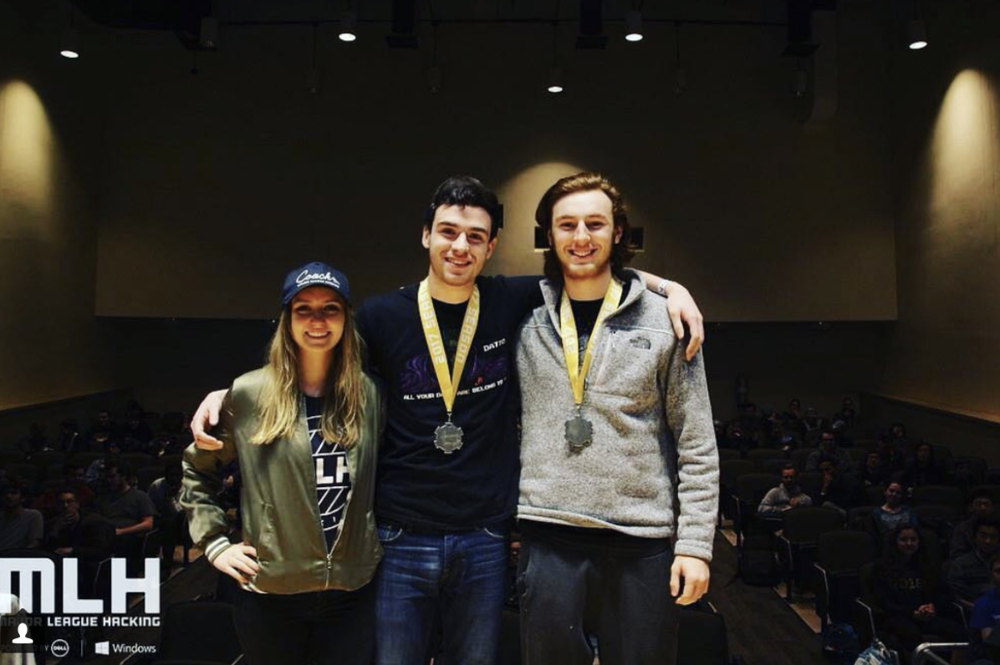
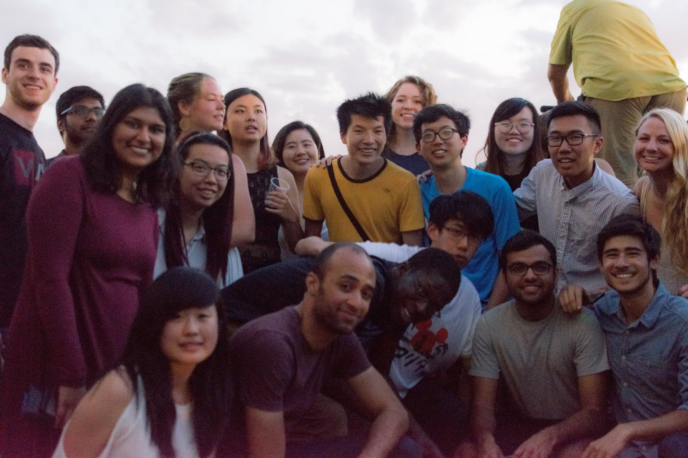
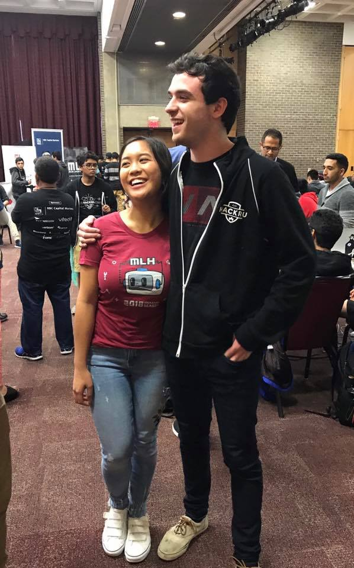

Prof Hacks
The beginning of 2017 was a bleak time for me. I was on winter break, I had just finished up what was my worst semester of college,
I was beginning to relapse from a what I now understand to be a mild case of depression, and I was constantly sleep deprived.
Sadly, almost all negatcould be attributed to my lack of success when searching for jobs, as well as
lack of social life.
At this point, I had applied to roughly 80 jobs, I vaguely remember fading in and out of contact with a lot of friends, yet I could never find the energy to hold a
conversation. I was bedridden, and I knew if I didn't try to awaken myself, I would be stuck wondering why I'm mindlessly
letting time pass by - queue Prof Hacks.
Prof Hacks was the first uplifting thing that happened to me in about 5 months or so. This 2 day hiatus of hacking
was amazing. I reconnected with a close friend of mine, and we decided to take zeros on some early homework assignments
and go to this random hackathon at Rowan University.
Now while I don’t encourage throwing away your grades, I do encourage not missing the opportunity to do something
unique and intriguing. While going to hackathon isn’t normally a one of a kind experience, but to go to a hackathon
that is three hours away after it had already started is pretty uncommon thing to do - to say the least. Not to
mention, I had to also go and pick up my friend from another school that was 45 minutes in the opposite direction.
Also, it wasn’t like we rushed to get to the hackathon. I took nothing but backroads the entire way, we stopped at
some random McDonalds that looked like it came out of an old Spielberg movie,

not to mention I couldn’t find parking at the hackathon since we were late - but nonetheless, we made it Prof Hacks.
Now our hack was the most stereotypical hack you could imagine. During Prof Hacks, we made a hack called a2b (link to A2B),
which was an app that allowed you to request directions through text messaging. I later found out that this hack is developed
at a lot of hackathon - literally another close friend wrote the same hack at another hackathon. But nonetheless, my
friend and I wrote the app using the Twilio API, Google Maps, and a Python Flask server. It took about 5 hours to get a
pretty decent app up and running, and it got us second place, as well as a few other prizes.

Now this was no PennApps or Hack The North, but for a hackathon I showed up late to, I couldn’t have asked for a better weekend.
Realizing My Own Realities
So Prof Hacks ends, and my life slowly trickles back into what it was before. Sleeping in, eating at late hours, but
I was gaining momentum.
A few more weeks go by and I start telling myself that I need to find a job. For those of you who have never applied for
entry level jobs, let me take a minute to explain how this process works.
When applying for an entry level position, at least in the tech industry, most people will agree that the first thing
recruiters sniff out on any resume, is a well branded internship. Nothing in my eyes really tops this. The more recognized
the brand, the farther your resume will get you - especially with competitors of said branded company. Underneath internships
is your school, GPA, and allocalades. As someone applying for jobs with zero internships, zero accolades, and essentially a
blank piece of paper with my name on it, finding a job was hard! I applied to 183 positions online, heard back from 4, and
failed every interview I got. Thus, it was stressful.
Now, while the semester was hard, there was one week I vividly remember; it was about 2 months after Prof Hacks, and it
was the week everyone accepted their internship/full time offers. It was a week of celebration, and I was happy to be i
apart of it. Being able to witness my colleagues’ determination and hard work translate to job offers was quite humbling to
say the least. And as we all exchanged our moments of excitement for one another, I kept thinking in the back of my head that
time was running out. Knowing this practically doubled my stress. So, for the following two weeks, I was skipping classes
and going out of my way to study for the last interview I managed to land.
Those two weeks were by far my hardest weeks of college. I remember I thought the world was just working against me. So many
hours of studying, hackathons, coding, staring at textbooks, just thinking that this hard work will get me a job - it all just
felt as if I wasted my time. I felt so defeated, and thought that I was naive to even believe that your GPA and degree are
what will land you a job.
So after those two weeks of studying, I didn’t make it past the third round of the interview. I studied for 8 hours a day,
knew that I answered all the interview problems correctly, yet the company decided to take on someone more experience. It’s
worth noting you can’t blame a company for doing this. A lot of money goes into interviewing candidates and finding talent.
One bad new hire is capable of losing a company hundreds of thousands of dollars.
After this, I stopped checking my emails for awhile. I didn’t want to delete all the rejection emails.
A Resolution
After about a week, I decide to open my emails and to my surprise I see this:

Now for context, I applied to this fellowship first round the previous semester, got rejected on Christmas day of 2016,
reapplied just because, and didn’t hear back all semester. Almost everyone I was close with that had applied, got in.
I figured it was over for me. I thought they just forgot to send me the rejection letter. Hell, the first time I got
rejected, they sent me someone else’s rejection letter. I was so hesitant to believe what I was seeing, I even followed
up to make sure I didn’t get someone’s acceptance email.
Well, I got in, and after all 180 something failures, it paid off.
Fast forward to the summer. That summer, I got matched to intern at BuzzFeed,

I met some of my closest friend,

I got acquainted with my future NYC roommates (who were also previous hackNY fellows),
(I'll eventually have an img here.)
I got to work on Unreal engine as an open source dev,
and I met my girlfriend Diana Kris.

I can actually say that getting just one acceptance email changed my entire life -
professionally and socially. My current day to day has been one hundred percent influenced
by hackNY, and I am still surprised about my recent experiences.
Now with all this said, the takeaway is that no matter how many failures you have, and no matter
how hard your situation is, success will eventually come if you keep trying. I failed countless
times - Yet, me and the employees at BuzzFeed still have the same resume. I don’t need to share
how many interviews I didn’t get, or how many interviews I failed. All people see are your
accomplishments. Therefore, your life can completely change in the span of 6 months if you want it to.
And until next time.
- Doug